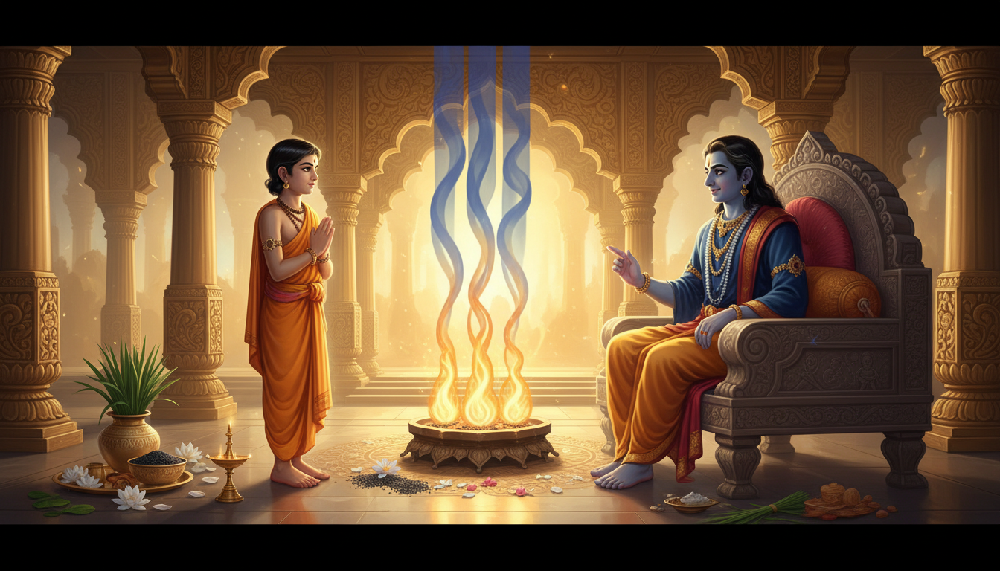

There is a fear that follows people even when everything looks fine. It enters a hospital waiting room, a sleepless night, the anniversary of a loss, or the moment a child asks, "What happens after death?" The mind wants an answer, but the answer feels too vast. So it changes the subject, scrolls, overworks, or hides behind ordinary busyness.

Nachiketa is the Vedic answer to this fear.
His story in the Katha Upanishad is not about a boy who defeated death by denying it. It is about a boy who stood at the threshold and asked the one question most adults postpone: if everything visible is temporary, what remains? He does not accept gold, long life, pleasure, or even reassurance as a substitute for knowledge. He asks until Yama, the lord of death, becomes his teacher.
This blog is for anyone facing death anxiety, grief, panic, strange dreams, Ketu affliction, Rahu-Ketu confusion, ancestral burden, fear of losing a parent, or the spiritual crisis that often appears when life changes suddenly. It combines Nachiketa's mythological story, remedial astrology, Pitru repair, the Nachiketa fire, Yama Deepam, Ayurvedic fear-care, philosophy, and carefully bounded occult practices. Please use the remedies alongside medical care and mental-health support. They are for courage, clarity, and nervous-system steadiness, not a substitute for treatment.
1. The Story: The Boy Who Kept His Father's Word
Nachiketa's father, Vajashravasa, performs a great sacrifice in which he gives away possessions for spiritual merit. But Nachiketa sees something troubling: the cows being offered are old, barren, blind, or lame. The outward ritual is grand, but the heart of the gift is empty.
The boy asks a question that sounds innocent and is actually razor-sharp: "I too belong to you. To whom will you give me?"
The father, provoked by the truth, replies in anger, "I give you to Death."
Nachiketa does not argue. He regards his father's word as sacred. He goes to Yama's abode and waits three nights without food or welcome. When Yama returns, he recognizes the breach of hospitality and offers three boons, one for each night.
For his first boon, Nachiketa asks for his father's peace: when the boy returns, may the father recognize him, lose his anger, and sleep again. For his second, he asks for the sacred fire that leads beyond fear; Yama teaches it and names it the Nachiketa fire. For his third, he asks the impossible question: what happens to a person after death?
Yama first tries to change the subject. He offers wealth, pleasures, long life, kingdoms, sons, and marriage. Nachiketa refuses them all because they are temporary. A temporary gift cannot answer the fear of ending. Yama finally teaches him the Self, the unchanging witness behind body, senses, mind, and breath.
The story ends with Nachiketa becoming free from death, not because his body becomes biologically immortal, but because his understanding no longer ends at the body.
2. The Three Boons Are Three Remedies
Nachiketa's three boons form a complete remedial system.
| Boon | Inner wound | Remedy |
|---|---|---|
| Father's peace | Anger, rejection, family karma, ancestral guilt | Pitru repair, forgiveness, respectful communication |
| Nachiketa fire | Fear of ending, ritual emptiness | Three-fold daily practice, study, charity |
| Knowledge of the Self | Existential dread, panic, spiritual confusion | Katha study, meditation, qualified guidance |
Many people try to begin with the third boon: they want enlightenment while refusing the first. Nachiketa teaches a more workable order. Repair the relationship. Purify the offering. Then ask the great question.
3. Ketu Astrology: The Shadow Planet Of Liberation
In Vedic astrology, Ketu is the headless south node, a shadow planet associated with detachment, past-life residue, intuition, occult knowledge, and moksha. His energy is not evil. Ketu is the point where the soul has finished over-identifying with a role and is ready to release it.
When Ketu is strong and integrated, life turns inward with unusual courage. When Ketu is afflicted, the same energy can feel like:
- fear of death or obsessive thoughts about ending,
- dissociation, brain fog, or sudden loss of interest,
- strange dreams and fragmented sleep,
- grief that returns without warning,
- abandonment by a parent, teacher, or group,
- confusion between spiritual awakening and mental exhaustion,
- ancestral patterns that repeat despite effort.
Nachiketa's Remedial Chart
| Chart signature | Possible feeling | Remedy |
|---|---|---|
| Ketu in the 8th house | Fascination and fear around death, inheritance, surgery | Katha study, gentle breathwork, medical check-ups |
| Ketu in the 12th house | Vivid dreams, sleep disturbance, mystical overwhelm | Sleep discipline, mantra, grounded guidance |
| Ketu with the Moon | Emotionally detached or anxious mind | Oil massage, water offerings, therapy |
| Ketu with Saturn | Heavy grief, loneliness, chronic fear | Consistent routine, service, grief support |
| Ketu with Rahu axis | Torn between status and liberation | Write down what must be released and what must be built |
| Ketu connected with the Sun or 9th house | Conflict with father, teacher, or dharma | First-boon forgiveness practice |
These indications should never be read as fixed predictions. They are entry points for self-repair. A qualified astrologer reads the whole chart, dasha, divisional charts, and current transits before prescribing.
4. The 2026 Magha Alignment: Ancestors On The Throne
Magha, the royal nakshatra in Leo, is traditionally ruled by Ketu and presided over by the Pitris, the ancestors. Its symbol is a throne. Magha holds honor, lineage, inherited authority, and the burden of inherited patterns.
The 2026 Ketu nakshatra transit is moving through Magha, making this an especially useful season for Nachiketa work. The axis is asking: are you carrying your lineage with reverence, or are you trapped in its old fear?
In November, the Kartik dark fortnight brings Yama Deepam on Dhanteras, which falls on 6 November 2026. This gives a natural ritual window: prepare for three days, honor the father and ancestors, kindle the Nachiketa fire, and then place the south-facing lamp for Yama.
Do not turn this into superstition. A transit does not decide your fate. It simply gives weather. The remedy is to move with the weather instead of against it.
5. The Nachiketa Fire: A Rare Threefold Practice
Yama teaches Nachiketa a fire ritual and then says that one who kindles the Nachiketa fire three times, unites with the three, and performs the three duties crosses beyond the fear of birth and death. The classical ritual has technical details, but the inner structure can be practiced at home.
Home Version
- Clean a small altar and place a lamp, water, black sesame, white flowers, and fruit.
- Sit facing east if possible and take nine slow breaths.
- Name three relationships that gave you life: mother, father, and teacher.
- Light the lamp and say: "May I receive my lineage without inheriting its fear."
- Recite the peace prayer three times: Om Asato Maa Sadgamaya, Tamaso Maa Jyotirgamaya, Mrityor Maa Amritam Gamaya.
- Offer water and sesame to your ancestors with gratitude, asking that any debt be completed with love.
- Perform three actions before ending: learn one verse, give one useful thing, and speak one kind sentence.
The "three" is the discipline. Knowledge without action becomes fantasy. Charity without study becomes guilt management. Speech without practice becomes pretense. Nachiketa joins all three.
6. The First Boon: Repairing The Father And The Line
Nachiketa's first request is not for himself. He asks for his father's peace. This is why ancestral repair comes before occult exploration.
If a parent is living and communication is safe, choose one small act this week: call, forgive, express gratitude, or simply stop rehearsing the old argument. If reconciliation is unsafe, do not force contact. Repair can begin inwardly.
Simple Pitru Remembrance
- Use clean water, black sesame, and darbha or kusha grass if available.
- Face south with a calm mind.
- Name three generations: father, grandfather, and great-grandfather.
- Say: "I remember you. I thank you. I release what was incomplete."
- Offer water gently and conclude with a simple meal donation or service.
Formal tarpana, shraddha, and pinda rites should follow family tradition and, ideally, a priest's guidance. The purpose is not to bribe ancestors or remove fear magically. The purpose is to bring unfinished love into order.
7. Yama Deepam: The South-Facing Lamp
Yama Deepam is one of the lesser-known protective rituals of the Diwali season. On Kartik Krishna Trayodashi, a lamp is placed outside the home, often facing south, the direction of Yama. The lamp is a sign of hospitality and remembrance, not an invitation to doom.
Practice
- Clean the area near the main entrance or southern threshold.
- Use a safe, stable lamp with enough oil or a battery candle if fire safety is a concern.
- Light it in the evening on Dhanteras or a Saturday during a difficult period.
- Say: "May no one in this house be swept away by fear. May time arrive as justice, not accident."
- Keep the flame protected, then sleep on time.
This ritual does not replace safety measures, medical care, security, or emergency planning. It trains the mind to face the direction it fears while keeping the home illuminated.
8. Ganesha And Ketu: Removing The Knot
Ganesha is commonly recommended in Ketu remedies. This is not merely because Ganesha removes obstacles. It is because Ketu cuts identity, and Ganesha teaches the soul to move through a broken pattern with intelligence.
A simple Ketu practice is:
- Offer durva or grass, red flowers, and a modak or fruit to Ganesha.
- Chant Om Gam Ganapataye Namah 108 times.
- Then chant Om Sraam Sreem Sraum Sah Ketave Namah 108 times.
- Give sesame, blankets, food, or educational help to someone who is isolated.
Do this on Tuesday or Saturday, or daily during a Ketu dasha when your astrologer recommends it. The mantra is not a magic shield. It is a way of turning detachment into service.
9. The Three-Night Threshold Meditation
Nachiketa waited three nights. That waiting can become a safe occult practice if it is understood as shadow work, not spirit contact.
Night One: Name The Fear
Light a small candle. Sit at arm's length. Breathe in for four, hold for two, and breathe out for six. Say inwardly: "I am willing to know what I am avoiding." Write one sentence about your deepest fear.
Night Two: Ask What It Protects
Before the same flame, ask: "If this fear were a guardian, what is it trying to protect?" Fear often guards love, responsibility, memory, or the body. Do not interrogate yourself. Listen for five minutes, then thank the fear.
Night Three: Return To The Witness
Visualize a chariot: body as the chariot, senses as horses, mind as reins, intellect as charioteer, and Self as passenger. Breathe slowly and say: "I am not only the horses, reins, or road. I can observe the journey." End with water and sleep.
Do not perform this during acute panic. If nightmares, intrusive thoughts, or hopelessness increase, stop and contact a doctor or mental-health professional.
10. Yamantaka: The Higher Occult Guardian
In Vajrayana Buddhism, Yamantaka means the slayer or terminator of death. Vajrabhairava Yamantaka is a wrathful meditational deity associated with conquering fear, ignorance, and the inner lord of death. His fierce form is not ordinary demonology; it is an advanced method of transforming terror into pristine awareness.
This practice belongs to Highest Yoga Tantra and traditionally requires empowerment, instructions, commitments, and a qualified teacher. Without that, do not attempt the full sadhana.
A householder can honor the principle safely: when fear appears, do not make fear the teacher. Make wisdom the teacher, and let fear become the subject being taught. This is the essence of Yamantaka and also of Nachiketa.
11. Ayurvedic Sattvavajaya: Turning Fear Into Courage
Ayurveda describes sattvavajaya chikitsa as the discipline of the mind. It uses knowledge, discernment, courage, memory, and meditation to steady the inner world. One classical principle is pratidwandwa bhavana: deliberately cultivate the opposite quality. Fear is not silenced by force; it is met with courage.
Fear-Care Routine
- Sleep and wake at consistent times.
- Massage the feet and scalp with warm oil if suitable for your constitution.
- Reduce late-night news and doomscrolling.
- Eat warm, simple food at regular times.
- Practice nine slow breaths before speaking about death.
- Try shirodhara or oil-dripping only under a trained Ayurvedic practitioner.
- If panic, depression, or suicidal thoughts appear, seek professional help immediately.
This is not denial of spirituality. A stable nervous system is the temple in which the Self can be heard.
12. Philosophy: The Chariot And The Witness
The Katha Upanishad says: Arise, awake, and learn by approaching the great.
Death fear usually shrinks a person into the body: this face, this name, this bank balance, this unfinished work. The Upanishad widens the frame. The body is a chariot. The senses are horses. The mind is the reins. The intellect is the charioteer. The Self is the passenger who is not manufactured by the vehicle.
This does not mean the body is worthless. The chariot is sacred and must be maintained. But the passenger should not mistake every jolt of the road for personal annihilation.
Nachiketa's liberation is therefore psychological, philosophical, and devotional at once. He honors the father. He performs the rite. He asks the question. He receives the teaching.
13. 41-Day Nachiketa Sadhana
This sadhana is especially useful during Ketu dasha, Ketu transit periods, grief, or the weeks before Yama Deepam.
Daily, 15 Minutes
- Nine slow breaths.
- Recite Om Asato Maa Sadgamaya three times.
- Study one verse of the Katha Upanishad.
- Write one line: "What am I treating as permanent today?"
- On Tuesday and Saturday, chant the Ketu mantra 108 times.
Weekly
- Offer water, sesame, and one practical act of service.
- Speak to or inwardly bless one parent, elder, or teacher.
- Keep one digital-silence hour.
- Complete one medical or mental-health task you have postponed.
On Day 41
Light a lamp for Nachiketa and Yama. Read the three boons again. Ask yourself which one still needs work: family peace, sacred action, or Self-knowledge. Choose one action for the next month.
14. Remedies For Specific Situations
Death Anxiety
Practice the three-night threshold meditation in a calm state. Keep the breath longer on exhalation. Speak with a therapist if anxiety becomes persistent.
Grief After Losing A Parent
Offer tarpana according to family custom. Donate food or education in their name. Write one letter to them, even if you do not send it. Then sleep on time.
Fearful Dreams And Broken Sleep
Oil the feet, reduce late screens, chant before sleep, and keep water by the altar. If dreams involve trauma or terror, seek trauma-informed therapy.
Ketu Confusion And Detachment
Worship Ganesha, give to isolated people, and choose one small earthly responsibility each day. Detachment becomes healthy when it still cares.
Medical Fear
Do the mantra, prayer, and lamp, then schedule the check-up. Nachiketa's greatness is not avoidance; it is clarity joined to action.
15. Your Nachiketa Vow
Each morning say:
I will not make fear my teacher. I will repair my lineage where it is safe. I will make my actions sincere. I will ask the deeper question. I will care for this body while remembering that I am more than this body.
Then do five things:
- Breathe consciously.
- Speak one kind word.
- Learn one truthful line.
- Give one small thing.
- Complete one earthly duty.
Nachiketa achieved death wisdom not by escaping life, but by looking straight at the fear and refusing every cheap answer. When you do the same, Yama stops being only the terror at the end of the road and becomes the guardian who teaches you how to live without flinching.
Sources
- Category: Rishis - Wikipedia
- Nachiketa - Wikipedia
- Katha Upanishad - Wikipedia
- Katha Upanishad English Translation - Shankaracharya.org
- Katha Upanishad - Upanishad
- Katha Upanishad: Sanskrit Text, Translation & Commentary - Learn Sanskrit
- The Nachiketa Story - Isha
- Ketu in Astrology: Significations, Effects & Remedies - Acharya Jyotish
- Magha Nakshatra: The Throne and the Ancestors - VedaCharts
- 2026 Ketu Nakshatra Transit - Drik Panchang
- 2026 Dhanteras Puja Date and Timings - Drik Panchang
- Yamadeepdaan Pooja Importance - Hindu Blog
- Pitru Paksha Tarpanam: Meaning, Time & Traditional Method - VedaJyothi
- Yamantaka Context and Terminology
- Integrated Yoga and Shirodhara for Anxiety - PMC
- Ayurvedic Concepts Related to Psychotherapy - PMC
- Nachiketa Tal Trek, Uttarkashi - Visit Uttarakhand